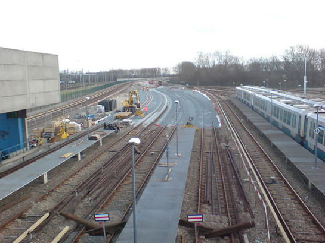
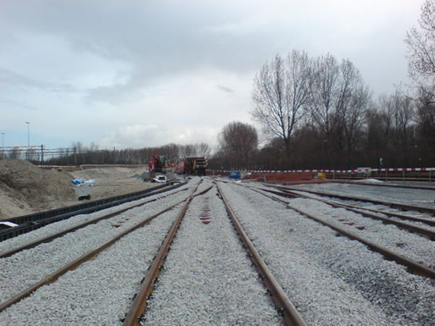
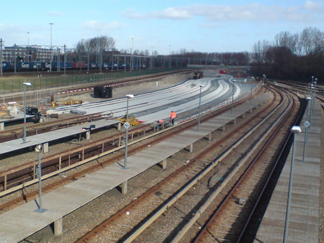
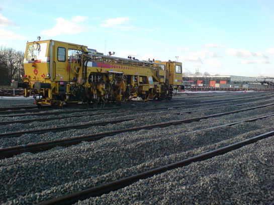
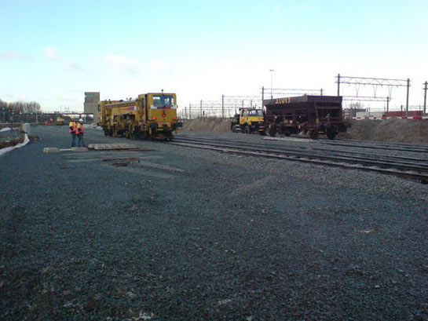
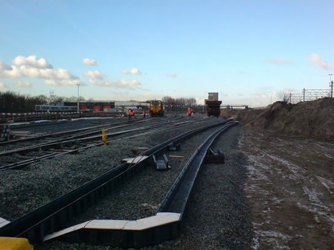
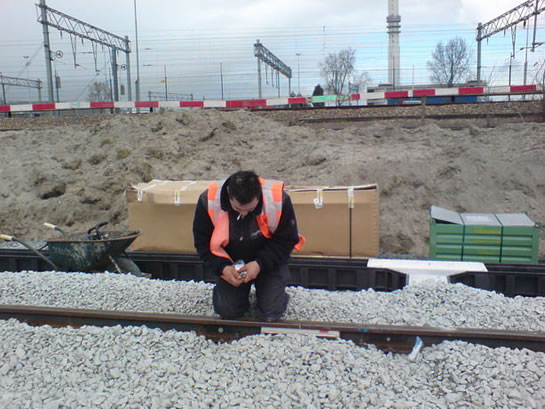
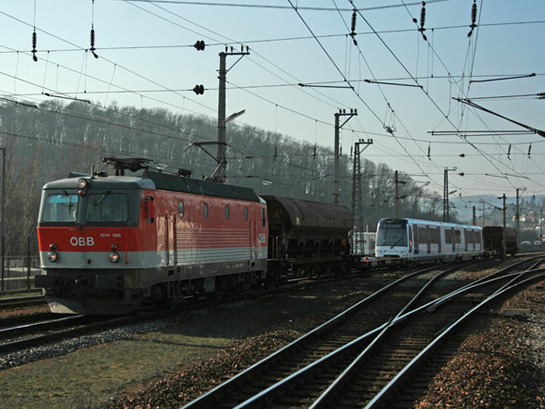
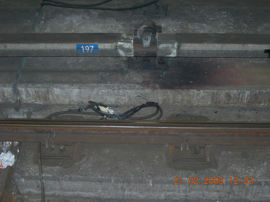

Spooruitbreiding Waalhaven vordert gestaag en meer nieuws...
- zondag 30 november 2008 22:10
- Geschreven door Joachim
De spooruitbreiding van het emplacement Waalhaven vordert gestaag. Inmiddels zijn de sporen 121 t/m 124 verlengd en zijn drie wissels weer op hun plaats gelegd. Spooraannemer Strukton heeft met een zogenaamde stopmachine de nieuwe sporen niveau gebracht, waardoor de rijtuigen straks soepel over de nieuwe sporen zullen rijden. Ook de infrastructuur van de spoorbeveilging wordt opnieuw aangebracht, deze opdracht wordt uitgevoerd door Cegelec Railinfra.
 Foto's met dank aan Jeepie.nl.
Foto's met dank aan Jeepie.nl.

Overzichtsfoto van de sporen 121 tot en met 124, kijkend in oostelijke richting.

Drie nieuwe wissels liggen inmiddels op hun plaats.

Overzichtsfoto van de sporen 121 t/m 124, kijkend in noordoostelijke richting.

De stopmachine van Strukton, die het spoor geheel op het juiste niveau brengt.

Een opvallende verschijning: een goederenwagon, vermoedelijk gebruikt voor het aanvoeren en storten van de railbedding, met daarvoor een Unimog weg/railvoertuig.

Ook de nieuwe kabelgoten zijn reeds gelegd.

Cegelec Railinfra draagt zorg voor de fysieke installatie van het spoorbeveiligingssysteem.
Defect metrorijtuig
Aan het einde van de middag raakte van een driewagentrein koprijtuig 5211 defect op station Schenkel spoor 1. Hierdoor werd enkelspoorbedrijf gereden tussen de stations Capelsebrug en Prinsenlaan via spoor 2. De vertragingen konden oplopen tot ongeveer 15 minuten.
Betonreparaties
In verband met betonreparaties aan de metrobaan in en rond station Zuidplein wordt er met name in de avonduren enkelspoor gereden tussen de wisselcomplexen Zuidplein I en Zuidplein II v.v. De betonreparaties zullen duren tot medio april.
RSG3 naar Wenen
Een van de eerste RSG3-rijtuigen, waarschijnlijk rijtuig 5502, werd onlangs overgebracht van fabrikant Bombardier Transportion in Bautzen (Duitsland) naar de klimaatkamer in Wenen (Oostenrijk). Daar wordt de hoedanigheid van het rijtuig getest, terwijl het blootgesteld wordt aan allerlei weersomstandigheden. Bij de bouw van de 5300-serie, ongeveer 10 jaar geleden, bracht rijtuig 5303 een bezoek aan de klimaatkamer.

Een RSG3-rijtuig op weg naar Wenen. De foto is afkomstig van de gebruiker 1020.018-6 van het  Eisenbahnforum Österreich.
Eisenbahnforum Österreich.
5402
Vorige week reed rijtuig 5402 een aantal dagen op de Erasmuslijn. Het rijtuig werd onder andere ingezet in de wagendiensten 901, 916, 923 en 925. Het komt vooralsnog weinig voor dat er materieel wat normaal gesproken op de Calandlijn rijdt, ingezet wordt op de Erasmuslijn.
Pandora aangekomen
Op 25 februari kwam de tunnelboormachine Pandora aan in de onvangstschacht in de Conradstraat, nabij het Centraal Station. Daarmee is ook de tweede geboorde tunnelbuis in stedelijk gebied, met een lengte van 2,4 kilometer, een feit. In de komende maanden zal de tunnelboormachine gedemonteerd worden. Daarnaast zal er begonnen worden met het leggen van de dwarsverbindingen tussen de twee geboorde tunnelbuizen. Overigens wordt er in de eerste tunnelbuis al gewerkt aan de aanleg van het spoor.
Hoewel de RET en de aannemer ervan uitgaan dat de tunnel in augustus 2009 al in gebruik genomen kan worden, klinken er andere geluiden uit de richting van het stadhuis. Vervoerswethouder Baljeu denkt dat eerder gedacht moet worden aan ingebruikname begin 2010.
Kortsluiting Dijkzigt
Op donderdagmorgen 21 februari veroorzaakte een metrotrein met een losgeraakt zandstrooipijpje kortsluiting, doordat het zandstrooipijpje in aanraking kwam met de stroomrail. Hierdoor ontstond een kortstondige vlamboog, die vervolgens een vast kortsluitpunt van de metrobaan kortstondig in brand zette. Dit veroorzaakte een behoorlijke rookontwikkeling. De metro werd op station Dijkzigt (spoor 1) in korte tijd ontruimd. Er deden zich geen persoonlijke ongelukken voor. De brandweer rukte uit met een tiental voertuigen. De vertragingen konden op de gehele Calandlijn oplopen tot ongeveer een half uur.

Op de voorgrond het beschadigde kortsluitpunt van de metrobaan. Op de achtergrond de stroomrail, die geraakt werd door het zandstrooipijpje.
Gedeeltelijke stremming RandstadRail Erasmuslijn
Tussen 26 april en 5 mei a.s. rijden er geen metro's op het trajectdeel tussen de stations Hofplein en Pijnacker Centrum. Er is wel metroverkeer mogelijk tussen Pijnacker Centrum en Den Haag Centraal v.v. De stremming is noodzakelijk in verband met de aanleg van wissels ter hoogte van de overweg Kleiweg. Verder staan er werkzaamheden gepland aan het nieuwe station Berkel-Westpolder, dat eind dit jaar gereed moet zijn. Overigens moet op 6 mei a.s. het nieuwe station Rodenrijs geopend worden.